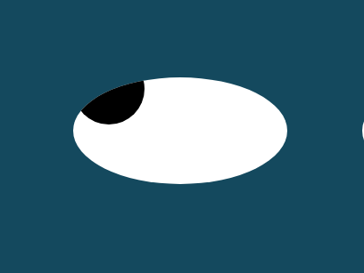

Projects
PacMan
The PacMen is a fun interactive project where users can add and control multiple PacMen on the screen. Each PacMan moves independently and changes direction upon reaching the screen boundaries. It's a simple exercise to practice working with HTML, CSS, and JavaScript for dynamic web content.
GitHub Repository: PacMen Repo
Eye
The Eye Project is a web project that features two animated eyes following the user's mouse movement. It's an engaging exercise to explore the use of event listeners and DOM manipulation with JavaScript. The eyes smoothly track the cursor, creating an interactive and visually interesting experience.
GitHub Repository: Eye Repo
Real-Time Bus Tracking
The Real-Time Bus Tracking project is a practical application that utilizes real-time data to track the movement of buses on a map. It integrates with a live data source to display the current location of buses, providing users with accurate and up-to-date information. This project showcases the use of APIs and mapping libraries to create a valuable and user-friendly transportation tool.
GitHub Repository: Real-Time Bus Tracking Repo